품질경영산업기사 (2015-05-31 기출문제)
1과목: 실험계획법
1. 반복이 있는 2 원배치법(모수모형)의 요인 A, B, AxB를 유의수준 5%로 F0에 의한 검정 결과가 옳은 것은? (단, F0.95(1, 36)=4.00, F0.95 (2, 36)=3.15, F0.95 (3, 36)= 2.76, (6, 36)= 2.25 이다.)
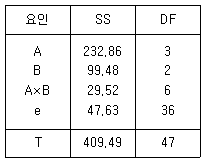
- A 인자만 유의하다.
- B 인자만 유의하다.
- A, A×B 인자만 유의하다.
- A, B, A×B 모두 유의하다.
(정답률: 88%)

2. 각각 ℓ, m(ℓ,m＞2)의 수준 수를 갖는 인자 A, B의 각 수준조합에서 r회 반복하여 실험하였고, 결측치는 발생하지 않았다. A인자의 i번째 수준, B인자의 j번째 수준 그리고 k번째 반복하여 측정한 특성치를 xijk이라 할 때, 다음 중 SA×B를 계산하는 식으로 가장 적합한 것은?
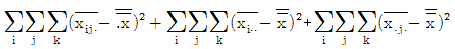
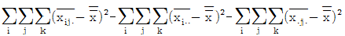
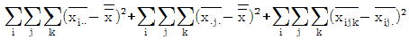
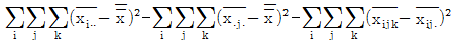
(정답률: 66%)
3. 분산분석표 작성시 포함되지 않는 것은?
- 요인
- 왜도
- 제곱합
- 자유도
(정답률: 91%)
4. 5수준의 모수인자 A와 3수준의 모수인자 B를 반복 2회 실험을 한 결과, 결측치가 하나 있어 대응치(추정치)를 사용한 후 분산분석표를 작성한 경우 어느 요인의 자유도가 줄어드는가?
- 오차항 및 전변동의 자유도
- 교호작용 및 전변동의 자유도
- 인자 A, B 및 전변동의 자유도
- 인자 A, B 및 오차항의 자유도
(정답률: 74%)
5. 3×3 라틴방격 실험에서 T1∙∙=16, T2∙∙=40, T3∙∙=47일 때 인자 A의 변동은 약 얼마인가? (단, Ti∙∙은 A의 각 수준의 합을 나타낸 것이다.)
- 103.15
- 146.29
- 176.22
- 231.14
(정답률: 68%)
6. 반복수가 일정한 1원 배치법의 실험에서 수준수가 4, 반복수가 3일 때, 변량인자 A의 분산(
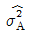
)의 추정식을 바르게 표현한 것은?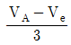
- VA
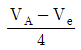
- VA+Ve
(정답률: 83%)
7. 다음은 기계간 부적합품의 차이가 있는지를 알아보고자 분산분석을 실시한 결과이다. 실험 결과에 대한 설명으로 가장 거리가 먼 것은?
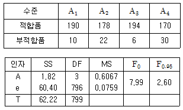
- 유의수준 5%로 분산분석 결과 기계간 부적합품률 차이는 의미가 있다.
- 현실적으로 계수치 1원배치 실험은 완전 랜덤화가 곤란하므로 실무상에서는 적용할 수 없다.
- 기각역 F0.95는 오차항의 자유도가 충분히 크므로 오차항의 자유도를 ∞로 놓고 구한 것이다.
- 부적합품률이 높은 A4 설비 등에 대해 보수 또는 오퍼레이터 훈련 등의 조치가 필요해 보인다.
(정답률: 82%)
8. 이원배치법에서 인자 A의 수준수는 4이고, 인자 B 의 수준수가 6 일 때 A 의 불편분산의 기대치는? (단, 반복은 1회이고, 인자 A, B는 모수이다.)
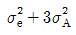
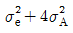
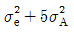
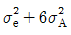
(정답률: 83%)
9. 다음 분산분석표의 ( )안의 값은 약 얼마인가?
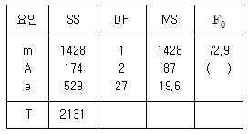
- 4.4
- 5.5
- 6.5
- 7.5
(정답률: 85%)
10. 난괴법(A)과 랜덤화배치법(B)의 비교 설명 중 틀린 것은?
- A는 블록별로 랜덤화 실험하고 B는 완전 랜덤 실험이다.
- B 의 오차의 자유도가 A 의 오차의 자유도보다 크다.
- 일반적으로 B 의 방법이 A 의 방법에 비하여 실험의 정도가 낮다.
- a 개의 처리를 n 회 반복 실험하는 경우에 오차항의 자유도는 A 는 a(n-1) 이며, B 는 (a-1)(n-1) 이다.
(정답률: 72%)
11. 온도 A(모수)를 3수준으로 하고, 실험일자 B(변량)를 3수준으로 하는 난괴법 실험을 실행하여, 다음의 데이터를 얻었다. 인자 B의 변동(SB)은 약 얼마인가?
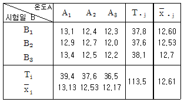
- 0.04
- 0.18
- 1.43
- 1.65
(정답률: 90%)
12. L27(313)형 직교표로서 실험한 결과 인자 A 에 관한 1, 2, 3 수준별 실험 데이터의 합이 각각 T000=36, T100=28, T200=16일 때 변동 SA는 얼마인가?(오류 신고가 접수된 문제입니다. 반드시 정답과 해설을 확인하시기 바랍니다.)
- 276.84
- 328.93
- 468.45
- 541.63
(정답률: 36%)
13. 난괴법에 관한 설명으로 틀린 것은?
- R.A. Fisher 에 의하여 고안되었고 농사시험에서 유래되었다.
- 1 인자는 모수인자이고 1 인자는 변량인자인 반복이 없는 이원배치 실험이다.
- 인자 B(변량인자)인 경우 수준간의 산포를 구하는 것이 의미가 있고 모평균 추정은 의미가 없다.
- A(모수인자), B(블럭인자)로 난괴법 실험을 한 경우 층별이 잘 된 경우에 정보량이 적어지는 경향이 있다.
(정답률: 75%)
14. 2 수준 직교배열표에서 인자 A가 기본표시 ab에 인자 B가 기본표시 bc에 배치되었다면 A×B의 기본표시는?
- ab
- ac
- bc
- abc
(정답률: 79%)
15. 인자의 수준수가 4이고 반복수가 5인 일원배치 실험에서 분산분석 결과 인자 A가 5%로 유의적이다. Ve=0.788이고,
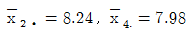
이라면 μ(A2)와 μ(A4)의 차이를 신뢰수준 95%로 구간추정 한다면? (단, t0.95(16)=1.746, t0.975(16)=2.120)- -0.720≤μ(A2)-μ(A4)≤1.240
- -0.836≤μ(A2)-μ(A4)≤1.356
- -0.930≤μ(A2)-μ(A4)≤1.450
- -1.071≤μ(A2)-μ(A4)≤1.591
(정답률: 39%)
16. x,y의 두 변량들 관계에서 회귀직선식을 구했더니
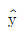
=1.8+1.3x이었다. 공식에 의하여 S(xy)=20, S(xy)=13, S(xx)=10 이라면 이 값을 가지고 분산분석표를 작성하고자 한다. 잔차에 의한 변동 Sy∙x의 값은?- 3.10
- 8.25
- 9.23
- 11.55
(정답률: 62%)
17. A, B, C인자에 대한 3×3 라틴방격볍의 실험에서 분산분석 결과, 인자 A 와 C는 유의하고 인자 B가 무시될 수 있다면
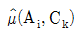
의 수준조합에서 모평균의 점추정치는?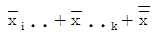
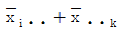
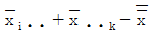
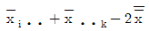
(정답률: 72%)
18. 일원배치 실험에 의해 얻어진 다음의 실험 데이터의 오차 변동(SE)은 약 얼마인가?
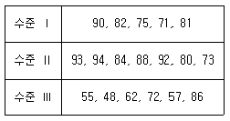
- 120
- 135
- 1508
- 1806
(정답률: 66%)
19. 인자 A 가 ℓ 수준, 반복 r 회의 1 원배치 실험을 하였다. 유의수준 α에서 처리효과 사이에 유의한 차이가 존재하는지를 판단하기 위한 기준값으로 사용되는 것은?
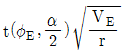
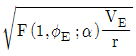
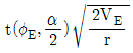
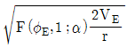
(정답률: 47%)
20. 인자의 수준수가 4, 반복이 5회인 1 원 배치 실험에서 ST=1.5, SA=0.85를 얻었다. 인자 A 의 순변동 (SA′)은 약 얼마인가?
- 0.65
- 0.73
- 0.85
- 0.97
(정답률: 72%)
2과목: 통계적품질관리
21. c 관리도에 대한 설명으로 가장 올바른 것은?
- 계량형 관리도이다.
- 관리한계 UCL과 LCL 은
 와 같이 구한다.
와 같이 구한다. - 부적합수는 이항분포를 따른다는 성질을 이용한다.
- 검사단위가 일정한 제품의 부적합 수의 관리에 이용한다.
(정답률: 74%)
22. 시료의 크기가 50인 p 관리도에서
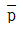
의 값이 0.037 이라면 UCL은 약 얼마인가?- 11.71%
- 11.99%
- 12.64%
- 12.98%
(정답률: 65%)
23.
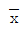
관리도와 Me 관리도의 설명 내용으로 가장 거리가 먼 것은? 관리도는 Me 관리도 보다 사용하기 쉽다.
관리도는 Me 관리도 보다 사용하기 쉽다. 관리도가 Me 관리도 보다 많이 사용된다.
관리도가 Me 관리도 보다 많이 사용된다. 관리도에 비해 Me 관리도는 제2종의 오류가 크다.
관리도에 비해 Me 관리도는 제2종의 오류가 크다.- Me 관리도의 관리한계폭은
 관리도의 관리한계폭 보다 협소하다.
관리도의 관리한계폭 보다 협소하다.
(정답률: 62%)
24. 로트의 크기 N = 1000 인 로트로부터 크기 10개의 시료를 램덤하게 샘플링하여 이 중에 부적합품 수가 0개이면 합격시키고, 1개 이상 나오면 불합격으로 한다면 이 로트가 합격될 확률은? (단, 포아송근사로 계산한다. 로트의 부적함품률은 10% 로 알려졌다.)
- 20%
- 25%
- 30%
- 37%
(정답률: 41%)
25.  관리도에서 표본의 크기와 관리한계의 폭 사이의 관계를 가장 올바르게 설명하고 있는 것은?
관리도에서 표본의 크기와 관리한계의 폭 사이의 관계를 가장 올바르게 설명하고 있는 것은?
- 표본의 크기 n이 커질수록 관리한계의 폭은 n에 비례하여 넓어진다.
- 표본의 크기 n이 커질수록 관리한계의 폭은 n에 반비례하여 좁아진다.
- 표본의 크기 n이 커질수록 관리한계의 폭은 √n에 비례하여 넓어진다.
- 표본의 크기 n이 커질수록 관리한계의 폭은 √n에 반비례하여 좁아진다.
(정답률: 57%)
26. 품질관리 담당자는 생산하는 전구의 평균수명을 신뢰수준 95%에서 오차한계가 20시간 이내로 하여 추정하기를 원한다. 전구의 수명은 정규 분포를 따르며, 표준편차가 60시간으로 알려져 있다고 가정하고 필요한 최소의 표본 크기는?
- 33
- 34
- 35
- 36
(정답률: 59%)
27. 어떤 불순물 혼입에서 불합격으로 된 확률이 4.2%, 수분으로 불합격된 확률이 5.3%, 불순물 혼입과 수분 양쪽으로 불합격이된 확률이 2.0% 라고 하면, 불순물 혼입이나 수분에서 로트의 불합격이 될 확률은?
- 4.2%
- 5.3%
- 7.5%
- 9.5%
(정답률: 61%)
28. 포아송 분포에서 기대값이 m 일 때 표준편차로 옳은 것은?
- m
- 2m
- m2
- √m
(정답률: 82%)
29. 제품의 생산량을 측정하였더니 다음과 같다. 모집단의 생산량의 표준편차를 95% 신뢰구간으로 구하면 약 얼마인가?
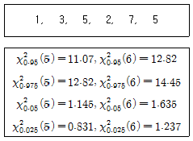
- 1.39 ~ 5.47
- 1.31 ~ 4.48
- 1.94 ~ 29.88
- 1.72 ~ 20.08
(정답률: 49%)
30.  관리도에서 UCL= 12, LCL=2일 때, 중심선은?
관리도에서 UCL= 12, LCL=2일 때, 중심선은?
- 2
- 6
- 7
- 10
(정답률: 75%)
31. 샘플링에 관한 설명 중 틀린 것은?
- 2 단계샘플링은 랜덤샘플링보다 일반적으로 정밀도가 나쁘다.
- 층별샘플링은 일반적으로 랜덤샘플링보다 정밀도가 나쁘다.
- 랜덤샘플링은 시료가 증가할수록 샘플링 정도가 높아진다.
- 취락샘플링은
 질 수 있다면 샘플링 정밀도가 높아진다.
질 수 있다면 샘플링 정밀도가 높아진다.
(정답률: 53%)
32. 정규분포에 대한 설명으로 틀린 것은?
- 분포가 이산적이다.
- 평균치를 중심으로 좌우대칭이다.
- 곡선의 모양은 산포의 정도 σ에 의해 결정된다.
- 확률변수 X를 X-μ/σ로 치환하면 표준정규분포가 된다.
(정답률: 57%)
33. 두 특성치에 대해 Sxx=36.65, Syy=2356.24, Sxy=263.75 일 때 결정계수는 몇 % 인가?
- 80.6
- 82.6
- 85.6
- 88.6
(정답률: 67%)
34. 관리도의 설명 중 틀린 것은?
- 통계적 품질관리의 기법
- 로트에 대한 합격·불합격 판정
- 공정상의 문제점 파악 및 해결
- 측정 데이터에 의한 점들의 위치 또는 움직임의 양상 파악
(정답률: 59%)
35. 계수형 및 계량형 샘플링검사에 대한 설명으로 틀린 것은?
- 일반적으로 계수형검사에서 시료의 크기는 계량형검사에서 시료의 크기보다 작다.
- 일반적으로 계량형검사는 계수형검사보다 정밀한 측정기가 요구되는 경우가 많다.
- 검사의 설계, 방법 및 기록은 계량형검사가 계수형검사보다 더 복잡한 경우가 많다.
- 단위물품의 검사에 소요되는 시간은 계수형검사의 경우가 더 작은 경우가 많다.
(정답률: 66%)
36. 검사의 엄격도 전환에서 보통검사에서 수월한 검사로 가는 조건 중 틀린 것은?
- 생산 진도가 안정
- 소관 권한자 인정
- 연속 5 로트 합격
- 전환 스코어 30점 이상
(정답률: 69%)
37.  관리도에서 타점(plot)된 점이 UCL 혹은 LCL 밖으로 벗어나게 되는 것은 어느 변동 때문인가?
관리도에서 타점(plot)된 점이 UCL 혹은 LCL 밖으로 벗어나게 되는 것은 어느 변동 때문인가?
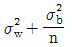
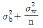
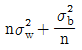
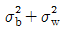
(정답률: 72%)
38. S 기업의 인사부장은 본사 사무직원들의 결근에 대해서 연구하기 위해 25명의 사무직원을 추출하여 년간 결근일수를 조사하였더니 25명 중 12명은 10일 이상 결근한 것으로 조사되었다. 10일 이상 결근자 비율의 95% 신뢰구간을 구하면 약 얼마인가? (단, u0.975=1.96, u0.95=1.645)
- (0.316, 0.644)
- (0.284, 0.676)
- (0.316, 0.676)
- (0.284, 0.644)
(정답률: 69%)
39. 모집단의 특성을 수량적으로 표시하는 데에는 평균치, 분산, 표준편차 등이 사용된다. 이들은 그 모집단에 대해서는 일정한 값으로서 각각 모평균, 모분산, 모표준편차 등으로 불리운다. 이들의 정수(定數)를 총칭하는 용어는?
- 편차(偏差)
- 모수(母數)
- 표본(標本)
- 통계량(統計量)
(정답률: 73%)
40. KS Q ISO 2859-3 의 스킵로트 샘플링 검사의 절차에서 스킵로트검사인 상태 2에서 승급이 되는 경우의 조건 중 틀린 것은?
- 자격상실의 사유가 발생하지 않은 경우
- 소관권한자가 이 빈도의 이행을 승인하는 경우
- 최근 로트가 합격판정수를 구하는 [표2]의 요구사항을 만족하는 경우
- 연속 5 로트 이상이 합격하고 누계샘플크기를 구하는 [표1]를 만족하는 경우
(정답률: 45%)
3과목: 생산시스템
41. 필름분석 중 1 초에 1 프레임, 혹은 1 분에 100 프레임의 속도로 촬영하여 분석하는 기법은?
- 미세동작분석
- 메모모션분석
- 스트로보 사진 분석
- 크로노사이클 그래프 분석
(정답률: 66%)
42. 작업장의 일정계획 수립의 목적으로 틀린 것은?
- 품질개선
- 납기준수
- 재공품의 최소화
- 작업준비시간의 최소화
(정답률: 40%)
43. 작업자가 한 장소에서 다른 장소로 이동하면서 작업할 때, 작업자의 작업동작 흐름을 추적하기 위한 분석방법은?
- 동작분석
- 다중활동분석
- 작업자공정분석
- 작업자미세분석
(정답률: 54%)
44. PTS법의 설명으로 틀린 것은?
- 주관적 판단을 해야 하는 레이팅에 부담이 없다.
- 작업방법과 작업시간을 분리하여 연구할 수 있다.
- 현장관측이나 시간관측 없이 작업표준을 설정할 수 있다.
- 무작위 표본추출의 이론을 적용한 통계적 작업측정 기법이다.
(정답률: 34%)
45. 재고부족이 허용되는 EOQ모형과 관련이 없는 비용은?
- 주문비용
- 재고유지비용
- 생산준비비용
- 재고부족비용
(정답률: 35%)
46. 열화손실을 감소시키기 위한 조치의 설명으로 틀린 것은?
- 정상운전 : 운전자의 훈련과 지도
- 개량보전 : 갱신분석의 조직화 실시
- 예방보전 : 주기적 검사와 예방수리의 적정 실시
- 일상보전 : 급유, 교환, 점검, 청소 등의 적정 실시
(정답률: 68%)
47. PERT/CPM 일정 계산 시 최종 단계에서 최종 완료일을 변경하지 않는 범위 내에서 각 단계에 허용할 수 있는 여유시간은?
- 시간간격
- 슬랙(slack)
- 주공정 시간
- 리드타임(lead time)
(정답률: 62%)
48. 정량발주시스템과 정기발주시스템에서 안전재고량에 대한 비교설명으로 옳은 것은?
- 정량발주시스템보다 정기발주시스템에서 안전재고 수준이 상대적으로 높다.
- 정기발주시스템보다 정량발주시스템에서 안전재고 수준이 상대적으로 높다.
- 두 경우 모두 안전재고량은 같은 수준이다.
- 두 경우 모두 안전재고량을 고려하지 않는다.
(정답률: 45%)
49. 현장감독자에게 해당품목을 어떤 작업방법으로 언제까지 생산할 것인가를 나타내는 작업명령에 관한 정보를 나타내는 것은 무엇인가?
- 작업지시서
- 생산계획서
- 작업독촉표
- 부적합보고서
(정답률: 64%)
50. ABC 재고관리의 특징과 거리가 먼 것은?
- 자재 및 재고자산의 차별 관리이다.
- 소수의 중요 품목을 중점 관리한다.
- 일반적으로 분류기준은 품목의 연간 사용량에 따른 가격의 크기이다.
- 낭비를 제거하기 위하여 적시에 필요한 원부자재를 제공하고자 하는 모형이다.
(정답률: 70%)
51. 로트크기(Lot size)를 결정하는 방법 중 대응발주(Lot for Lot: LFL)법의 특징이 아닌 것은?
- 순소요량 만큼 발주한다.
- 명시된 고정량을 주문한다.
- 고가품목이나 생산준비 비용이 적은 품목에 적합하다.
- 주문횟수가 많아 주문비용과 생산준비 비용이 많이 든다.
(정답률: 36%)
52. MRP 시스템의 기본이 되는 3가지 입력사항으로 틀린 것은?
- 주일정계획
- 자재명세서
- 수요예측치
- 재고기록철
(정답률: 73%)
53. 5S 중 ‘정리’에 대한 설명으로 옳것은?
- 먼지나 쓰레기가 없는 상태로 한다.
- 정해진 일을 올바르게 지키는 습관을 생활화 한다.
- 필요한 것을 필요한 때에 꺼내 사용할 수 있도록 한다.
- 필요한 것과 필요 없는 것을 구분하여 필요 없는 것은 없앤다.
(정답률: 61%)
54. 어떤 작업자의 시간연구결과 사이클타임 2분, 작업수행도는 90%로 평가되었다. 정상시간에 대한 여유율을 10%로 설정할 경우, 이 작업에 대한 표준시간은 약 얼마인가?
- 1.4분
- 1.6분
- 1.8분
- 2.0분
(정답률: 55%)
55. 다음의 용어와 가장 관련이 있는 수요예측기법은?
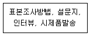
- 델파이법
- 시장조사법
- 패널동의법
- 역사적 자료유추법
(정답률: 62%)
56. 작업유형별로 적합한 작업측정기법이 틀린 것은?
- 주기가 극히 짧고 매우 반복적인 작업 – 필름 분석
- 고속으로 촬영하여 저속으로 영사 – 미세동작연구
- 각 동작의 표준시간을 산정할 때, 레이팅이 필요없는 직무 – 스톱워치법
- 주기가 길거나 활동내용이 일정하지 않은 비반복적인 작업 – 워크샘플링
(정답률: 42%)
57. 어느 기업의 시간분석 담당자가 요소작업에 소요되는 시간을 측정한 결과, 예비관측의 표준편차는 1.0분, 신뢰수준 90%, 허용오차 0.8 분일 때, 관측횟수는? (단, 신뢰수준 90% 일 때, Z=1.65 이다.)
- 5회
- 7회
- 9회
- 11회
(정답률: 38%)
58. 최단처리시간규칙을 사용할 경우 평균작업완료 시간은?
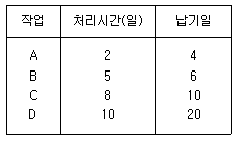
- 6.25 일
- 8 일
- 12.25 일
- 25 일
(정답률: 46%)
59. MRP의 효과가 가장 적게 나타는 때는?
- 제품원가가 고가일 때
- 최종제품이 공정이 길 때
- 부품구입 소요시간이 길 때
- 제품의 생산공정이 간단할 때
(정답률: 52%)
60. 공정효율을 구하는 과정에 관한 일반적인 설명으로 틀린 것은?
- 실제공정효율은 이론공정효율보다 크다.
- 실제 작업장 수는 이론적인 작업장 수보다 많다.
- 라인밸런싱은 조립라인의 균형화 문제를 다룬다.
- 사이클 타임은 한 작업장에서 소요되는 최대 허용시간을 말한다.
(정답률: 45%)
4과목: 품질경영
61. 제품책임(PL)에 있어 엄격책임은 부당하게 위험한 결함상태의 제품을 소비자에게 판매한 자는 사용자나 그의 재산에 입힌 손해에 대하여 책임이 있다는 것을 규정하고 있다. 엄격책임에 대한 설명으로 가장 관계가 먼 내용은?
- 엄격책임 소송의 초점은 제품이 결함이 있는지 여부에 있다.
- 타인의 권리를 침해하는 경우에 생기는 법률상의 책임으로 개인과 개인간에 생기는 책임이다.
- 불합리하게 위험한 상태로 제품을 판매하였을 경우 계약요건에 없더라도 과실존재 입증만으로도 생산자나 판매자가 지는 책임이다.
- 제조자가 자사 제품이 더 이상 점검되지 않고 사용될 것을 알면서도 제품을 유통시킬 때, 그 제품이 인체에 상해를 줄 수 있는 결함이 있는 것으로 입증될 때 적용할 수 있다.
(정답률: 74%)
62. 국가표준기본법 시행령에 따른 기본단위가 아닌 것은?
- m
- kg
- Hz
- cd
(정답률: 60%)
63. 표준화에 관련한 용어설명으로 틀린 것은?
- 시방(Specification)은 재료, 제품, 공구, 설비 등에 관하여 요구하는 특성을 규정한 것을 말한다.
- 가규격(Tentative standard)이란 정식규격의 설정에 앞서 시험적으로 적용할 것을 목적으로 정한 것이다.
- 잠정규격(Temporary standard)은 종래의 규격이 적당하지 않을 때 특정기간에 한하여 적용할 것을 목적으로 한 정식규격이다.
- 호환성(Interchangeability)은 잘 쓰이지 않기 때문에 불필요하다고 생각되는 구성품의 수, 형상, 제품의 형식수 등을 줄이는 것을 말한다.
(정답률: 72%)
64. 다음 중 가빈(D.A. Garvin) 박사가 품질을 이루고 있는 범주로서 제시한 8가지 품질의 구성요소에 해당되지 않는 것은?
- 안전(safety)
- 신뢰성(reliability)
- 성능(performance)
- 지각된 품질(perceived quality)
(정답률: 57%)
65. 일반적으로 시간에 따라 변하는 수량의 상황을 나타낼 때 사용되는 통계도표로 가장 적당한 것은?
- 삼각 그래프
- 원 그래프
- 그림 그래프
- 꺾은선 그래프
(정답률: 75%)
66. 제품구매 소비자 측면에서 미치는 표준화 효과의 내용으로 옳지 않은 것은?
- 제품선택의 용이
- 제품의 교환 수리가 용이
- 소비자의 구입 가격상 이익
- 다양화에 따른 선택의 용이
(정답률: 62%)
67. 어떤 기계부품의 규격은 7±0.025 mm 이다. 이 부품을 제조하는 공정의 표준 편차가 0.01 mm 이면 이 부품에 대한 공정능력의 평가로 옳은 것은?
- 공정능력이 불충분하다.
- 상기 자료만으로는 알 수 없다.
- 공정능력이 충분히 만족되고 있다.
- 공정능력은 있으나 관리에 주의가 필요하다.
(정답률: 43%)
68. 품질은 “사회에 끼친 총 손실이다.” 라고 정의한 사람은?
- 쥬란(Juran)
- 다구찌(Taguchi)
- 데밍(Deming)
- 이시까와(Ishikawa)
(정답률: 68%)
69. 조직의 임원들로 구성되어 있으며 품질을 향상시키기 위해 구성원들을 지휘하고 각 부서간의 업무를 조정하는 협의체는?
- 품질분임조
- 방침관리팀
- 품질개선팀
- 품질경영위원회
(정답률: 64%)
70. A 부품의 규격이 3.5 ± 0.02, B 부품의 규격이 5.0 ± 0.04, C 부품의 규격이 7.0 ± 0.⑤인 3가지 부품을 직선으로 조립할 경우, 이 조립 부품의 겹침공차는 약 얼마인가?
- ± 0.020
- ± 0.067
- ± 0.110
- ± 0.316
(정답률: 60%)
71. KS Q ISO 9001:2009(품질경영시스템 – 요구사항) 중 적격성, 교육훈련 및 인식에 관하여 조직이 이행하기를 요구하는 사항이 아닌 것은?
- 취해진 조치의 효과성을 평가
- 조직의 인원은 경험에 의하여 적절히 선발
- 필요한 적격성을 충족시키기 위하여 교육훈련을 제공하거나 기타 조치
- 제품 요구사항에 대한 적합성을 미치는 업무를 수행하는 인원에 대해 필요한 적격성 결정
(정답률: 71%)
72. 품질비용 중 예방비용에 해당되는 것은?
- 재가공 작업비용
- 클레임 처리비용
- 품질관리 교육비용
- 계측기 검·교정 비용
(정답률: 76%)
73. 신QC 7가지 방법에 해당되지 않는 것은?
- 고든법
- 연관도법
- 계통도법
- 애로우도법
(정답률: 68%)
74. 고객만족 활동은 모든 사원이 고객이 제일이라는 생각을 가지고 행동으로 실천하는 것이 중요하다. 가장 적절치 못한 것은?
- 고객만족 경영실천에 대한 비젼을 제시한다.
- 고객불만사항이 많은 고객의 요구는 배제한다.
- 고객 제일주의가 모든 임직원의 공유된 가치관이어야 한다.
- 고객의 요구나 기대를 파악하기 위해 고객만족도를 정기적으로 조사한다.
(정답률: 74%)
75. 공장 또는 시험장에 있어서의 계량관리에서 수행해야 할 내용으로 틀린 것은?
- 계량관리의 목적을 명확히 한다.
- 관리를 행하는 조직을 확립하고 책임분리를 명확히 한다.
- 관리대상의 조사연구를 하고 계측화, 자동화를 도모한다.
- 시간적인 단축을 위하여 정비규정의 표준화에 얽매이지 말아야 한다.
(정답률: 75%)
76. 개선활동시 사용되는 아이디어 발상법 중 브레인스토밍(Brain storming)법의 4가지 원칙에 해당하지 않는 것은?
- 비판하지 않는다.
- 발언을 자유분방하게 한다.
- 발언의 양보다 질을 추구한다.
- 남의 아이디어에 대해 개선, 결합을 꾀한다.
(정답률: 75%)
77. 제품이나 서비스 품질이 고객의 만족을 얻기 위해서는 품질보증의 필요조건과 충분조건이 모두 충족되어야 하는데, 다음 중 품질보증의 필요조건에 해당되지 않는 것은?
- 공약사항의 이행
- 공약사항의 보완
- 요구조건의 충족
- PL 문제에 대한 대처
(정답률: 27%)
78. 한국산업규격의 분류기호를 표기한 것 중 틀린 것은?
- 섬유 – H
- 일용 – G
- 요업 – L
- 조선 – V
(정답률: 62%)
79. 품질시스템의 활동 및 관련결과가 계획된 사항에 부합하는지의 여부를 검증하고 품질시스템의 유효성을 판단하기 위해 정기적으로 계획, 실시, 평가하는 것은?
- 품질시스템 검토
- 품질시스템 검사
- 품질시스템 감사
- 품질시스템 평가
(정답률: 50%)
80. 6시그마 추진을 위한 인력 육성책의 일환으로 조직원을 선발하여 6시그마 교육을 수행시킨 다음 본인의 조직에서 업무를 수행하게 하면서 동시에 6시그마 프로젝트 리더가 수행하는 개선 활동에 팀원으로 참여하여 활동하는 요원의 자격을 무엇이라 하는가?
- 그린벨트
- 챔피언
- 블랙벨트
- 마스터 블랙벨트
(정답률: 58%)